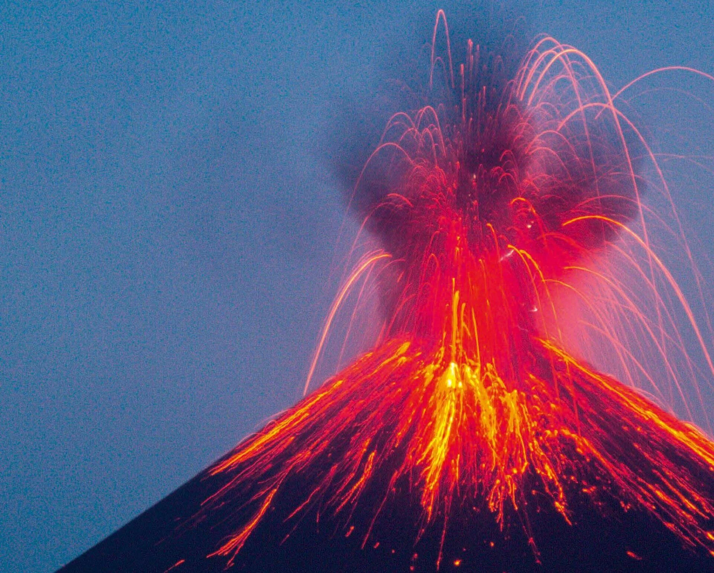
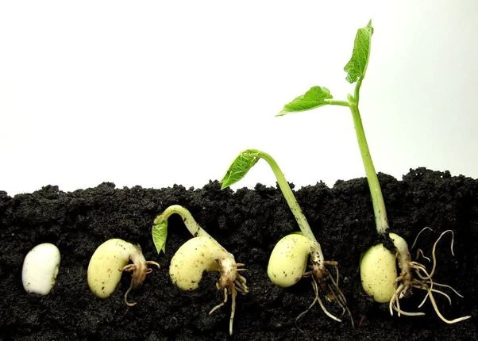
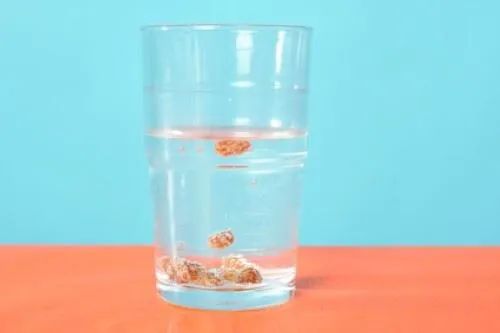
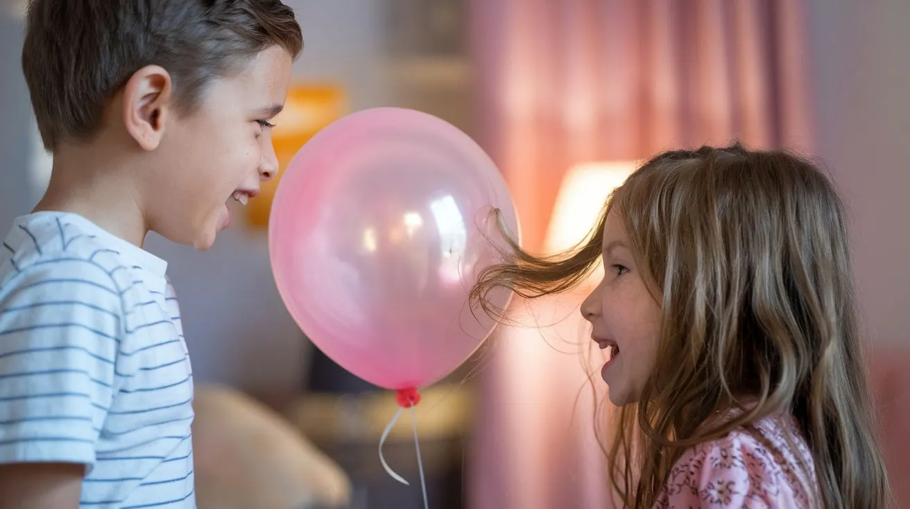

1. Faire un volcan en éruption 🌋

Matériel : Un petit récipient, du vinaigre, du bicarbonate de soude, du colorant rouge (optionnel) et un plateau pour éviter les dégâts.
Étapes :
- Place le récipient sur un plateau.
- Ajoute deux cuillères de bicarbonate de soude.
- Ajoute quelques gouttes de colorant rouge pour simuler la lave.
- Verse lentement du vinaigre et observe l'éruption mousseuse !
Explication : La réaction entre le vinaigre (acide acétique) et le bicarbonate de soude (base) produit du dioxyde de carbone, créant une mousse qui déborde comme un volcan.
2. L’eau qui ne tombe pas 💧

Matériel : Un verre rempli d'eau et une carte rigide (comme une carte à jouer).
Étapes :
- Remplis un verre d’eau presque jusqu’au bord.
- Pose la carte rigide sur l’ouverture du verre.
- Maintiens fermement la carte et retourne doucement le verre.
- Lâche la carte : l’eau ne tombe pas !
Explication : La pression atmosphérique qui pousse vers le haut est plus forte que le poids de l’eau, empêchant ainsi la carte de tomber.
3. Faire pousser une graine 🌱

Matériel : Un petit pot, du coton, de l’eau et des graines (lentilles, haricots, etc.).
Étapes :
- Place une couche de coton humide dans le pot.
- Dépose quelques graines sur le coton.
- Arrose légèrement chaque jour sans détremper le coton.
- Observe la germination en quelques jours !
Explication : L’eau déclenche la germination en activant les enzymes de la graine, lui permettant de commencer à pousser.
4. La danse des raisins 🍇

Matériel : Un verre d’eau gazeuse et quelques raisins secs.
Étapes :
- Verse de l’eau gazeuse dans un verre.
- Ajoute quelques raisins secs.
- Observe comment ils montent et descendent.
Explication : Les bulles de dioxyde de carbone se fixent aux raisins, les faisant flotter. En éclatant à la surface, elles les font redescendre.
5. L’électricité statique ⚡

Matériel : Un ballon gonflé et des cheveux secs.
Étapes :
- Gonfle un ballon et noue-le.
- Frotte-le vigoureusement sur tes cheveux secs.
- Rapproche-le d’objets légers comme du papier déchiré.
- Regarde comment ils sont attirés par le ballon.
Explication : En frottant le ballon, il accumule une charge électrique qui attire les objets légers, un phénomène connu sous le nom d’électricité statique.